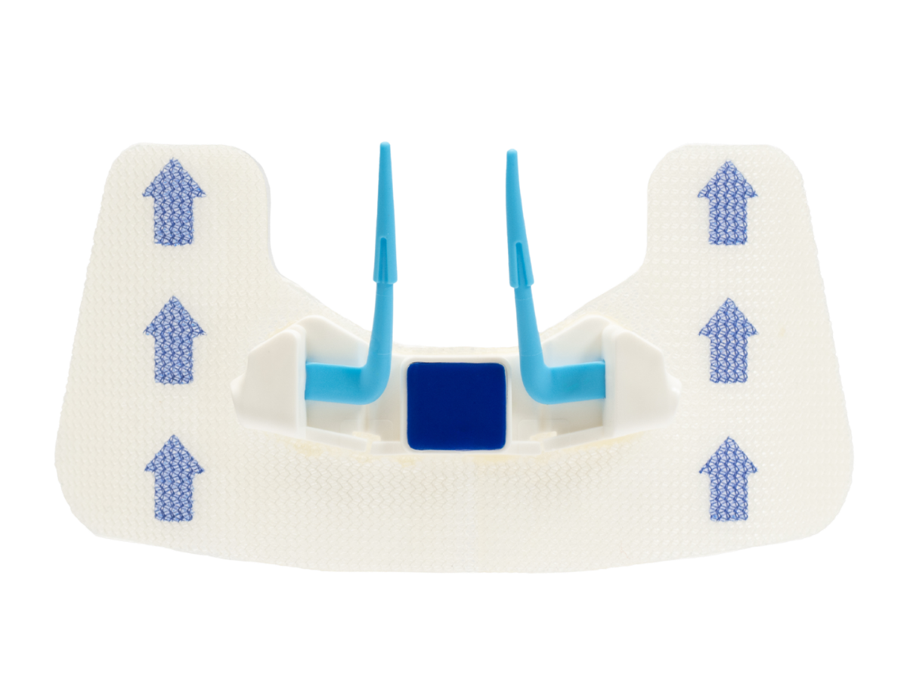
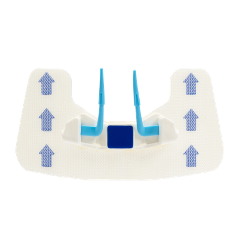
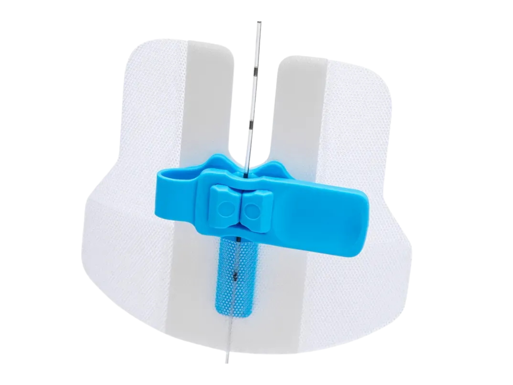
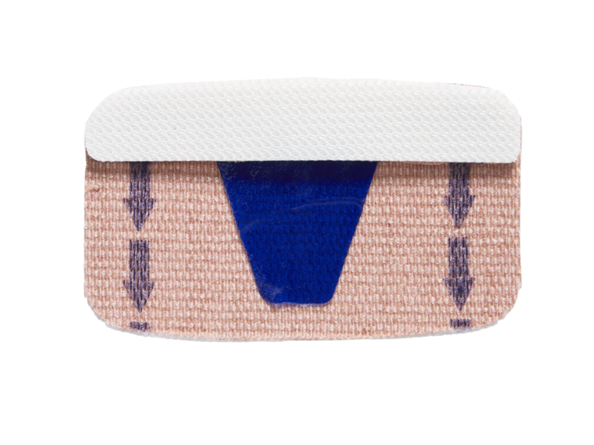
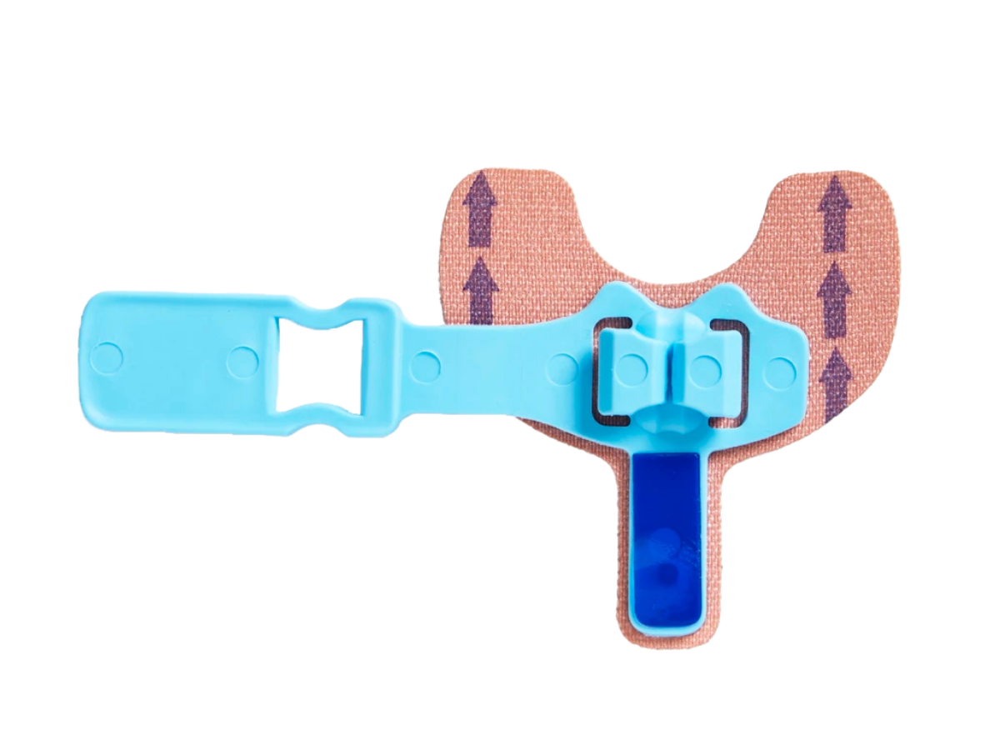
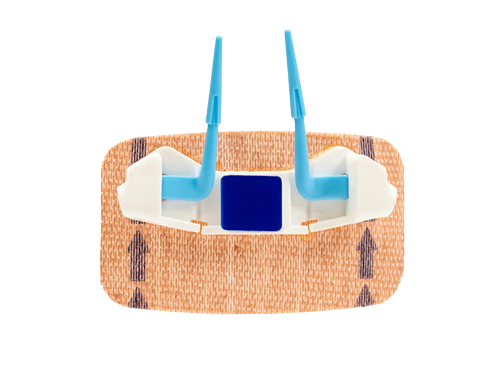

FlexGrip Alpha
System mocujący do bezszwowej stabilizacji cewników z motylkiem, takich jak cewniki centralne, PICC, Midline oraz dializacyjne.
Zapytaj o produktFlexGrip® to rodzina bezszwowych systemów mocujących zaprojektowanych z myślą o stabilizacji cewników oraz komforcie pracy personelu medycznego.
Oferta obejmuje rozwiązania dla pacjentów dorosłych oraz dedykowane systemy neonatologiczne.

Rozwiązania do stabilizacji cewników stosowanych u pacjentów dorosłych, zaprojektowane z myślą o prostocie aplikacji i bezpieczeństwie mocowania.

System mocujący do bezszwowej stabilizacji cewników z motylkiem, takich jak cewniki centralne, PICC, Midline oraz dializacyjne.
Zapytaj o produkt
System bezszwowy przeznaczony do stabilizacji cewników zewnątrzoponowych.
Zapytaj o produktDelikatne i funkcjonalne rozwiązania do stabilizacji cewników u najmłodszych pacjentów.

Neonatologiczny system mocujący do cewników PICC oraz CVC, zaprojektowany z myślą o delikatnej skórze pacjenta.
Zapytaj o produkt
System mocujący przeznaczony do stabilizacji cewników pępowinowych w zastosowaniach neonatologicznych.
Zapytaj o produkt
Neonatologiczna wersja systemu Alpha do stabilizacji cewników z motylkiem.
Zapytaj o produktW przypadku pytań dotyczących doboru odpowiedniego wariantu FlexGrip® do konkretnego zastosowania, skontaktuj się z nami — pomożemy dobrać rozwiązanie do potrzeb placówki.